Lecture2-大数据平台
[TOC]
1. Hadoop
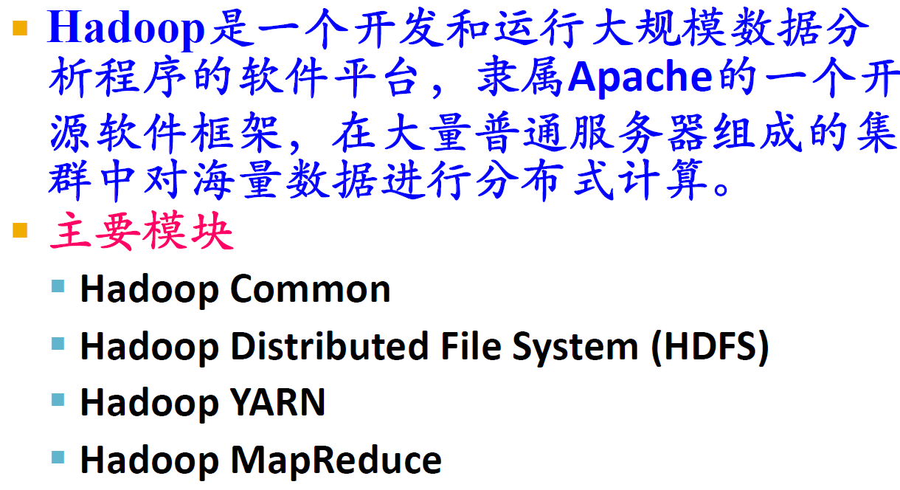
1.1. Hadoop计算过程
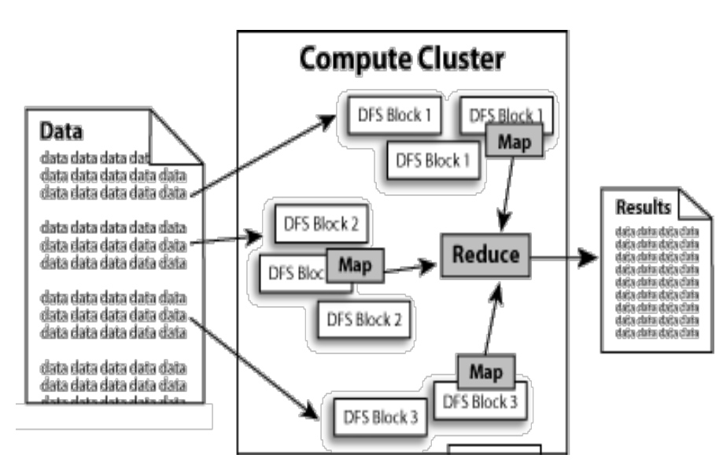
1.2. Hadoop发展简史
- Hadoop起源于Apache Nutch，后者是一个开源的网络搜索擎，本身也是由Lucene项目的一部分。
- Nutch项目开始于2002年，一个可工作的抓取工具和搜索系统很快浮出水面。
- 2004年，Google发表了论文，向全世界介绍了MapReduce。
- 2005年初，Nutch的开发者在Nutch上有了一个可工作的MapReduce应用，到当年年中，所有主要的Nutch算法被移植到使用MapReduce和NDFS来运行。Nutch中的NDFS和MapReduce实现的应用远不只是搜索领域。
- 在2006年2月，他们从Nutch转移出来成为一个独立的Lucene子项目，成为Hadoop。
- 在2008年2月，雅虎宣布其搜索引擎产品部署在一个拥有1万个内核的Hadoop集群上。
- 2008年4月，Hadoop打破世界纪录，成为最快排序1TB数据的系统。运行在一个910节点的群集，Hadoop在209秒内排序了1TB的数据（还不到三分半钟），击败了前一年的297秒冠军。同年11月，谷歌在报告中生成，它的MapReduce实现执行1TB数据的排序只用了68秒。在2009年5月，有报道宣称Yahoo的团队使用Hadoop对1TB的数据进行排序只花了62秒时间。
1.3. Hadoop的作用与功能
- Hadoop采用了分布式存储方式，提高了读写速度，并扩大了存储容量。采用MapReduce来整合分布式文件系统上的数据，可保证分析和处理数据的高效。与此同时，Hadoop还采用存储冗余数据的方式保证了数据的安全性。
- Hadoop中HDFS的高容错特性，以及它是基于Java语言开发的，这使得Hadoop可以部署在低廉的计算机集群中，同时不限于某个操作系统。Hadoop中HDFS的数据管理能力，MapReduce处理任务时的高效率，以及它的开源特性，使其在同类的分布式系统中大放异彩，并在众多行业和科研领域中被广泛采用。
1.4. MapReduce和传统关系型数据库的比较
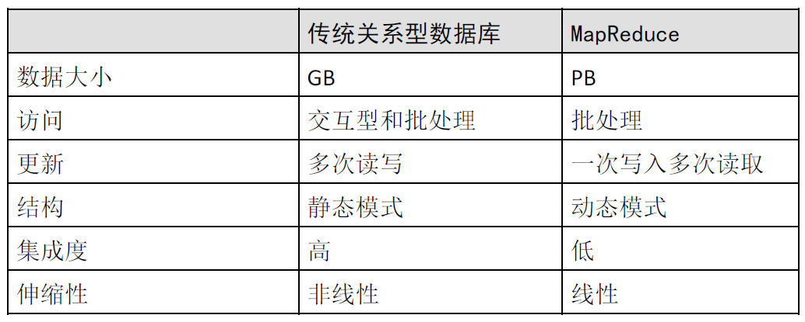
1.5. Hadoop结论
二者互相融合是一种趋势
| 传统RDBMS | MapReduce | |
|---|---|---|
| 效率 | 低(通过排序和合并来重建数据库) | 高(更新大部分数据库数据的效率高于B树的更新) |
| 数据集特点 | 持续更新 | 数据被一次写入，多次读取 |
| 数据格式 | 结构化数据 | 非结构化或半结构化数据(避免规范化带来的非本地读问题) |
| 应用领域 | 点查询、更新 | 批处理 |
1.6. Hadoop的优点
Hadoop 是一个能够对大量数据进行分布式处理的软件框架，并且是以一种可靠、高效、可伸缩的方式进行处理的，具有以下优点：
- Hadoop是可靠的：因为它假设计算元素和存储会失败，因此它维护多个工作数据副本，确保能够针对失败的节点重新分布处理。
- Hadoop是高效的：因为它以并行的方式工作，通过并行处理加快处理速度。
- Hadoop是可伸缩的：能够处理PB级数据。
- Hadoop成本低：依赖于廉价服务器：因此它的成本比较低，任何人都可以使用。
- 运行在Linux平台上：Hadoop带有用Java语言编写的框架，因此运行在Linux生产平台上是非常理想的。
- 支持多种编程语言：Hadoop上的应用程序也可以使用其他语言编写，比如C++。
1.7. Hadoop的生态圈
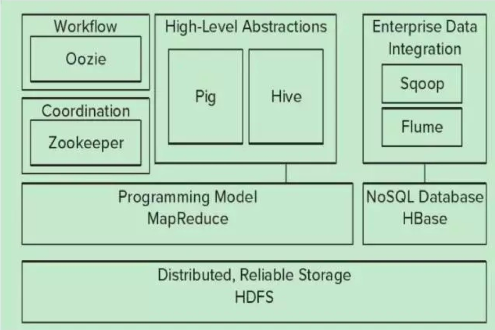
| 组件 | 描述 |
|---|---|
| ZooKeeper | 调度管理组件 |
| Oozie | 堆栈 |
| Pig | 对MapReduce进行抽象，可以理解为接口，被其他生态成员调用 |
| Hive | 类型于SQL的高级语言，直接在Hadoop上进行查询 |
| Sqoop | 迁移工具，主要进行迁移，数据集成 |
| Flume | Flume是Cloudera提供的一个高可用的，高可靠的，分布式的海量日志采集、聚合和传输的系统，Flume支持在日志系统中定制各类数据发送方，用于收集数据；同时，Flume提供对数据进行简单处理，并写到各种数据接受方（可定制）的能力。 |
| Mahout | 提供一些可扩展的机器学习领域经典算法的实现，旨在帮助开发人员更加方便快捷地创建智能应用程序 |
1.8. Hadoop体系结构

| 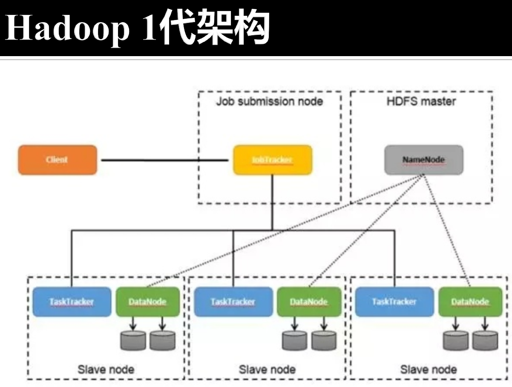 | 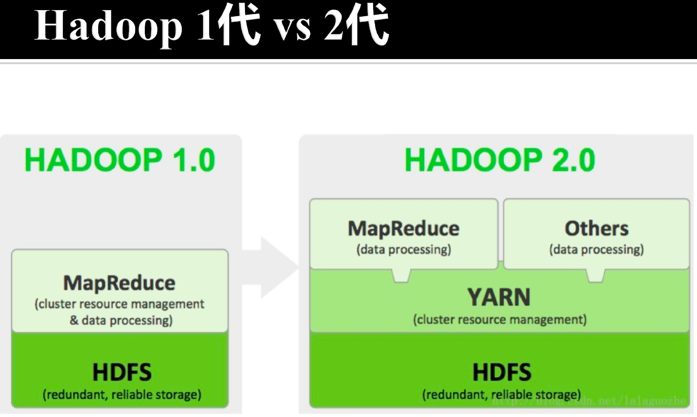 |
1.9. Hadoop开发流程

1.10. Hadoop与分布式开发
- MapReduce计算模型非常适合在大量计算机组成的大规模集群上并行运行。每一个map任务和每一个reduce任务均可以同时运行于一个单独的计算节点上，可想而知，其运算效率是很高的。
- 并行计算过程：
- 数据分布存储
- 分布式并行计算
- 本地计算:是一种减少带宽消耗的方法
- 任务粒度:粒度下降，大的数据切分成小的数据，一个单位的数据尽量小于一个Block的大小，在一个节点上。
- 数据分割(Partition)
- 数据合并(Combine):可以理解成为是和Reducer一致的东西
- Reduce
- 任务管道
2. GFS与HDFS
| 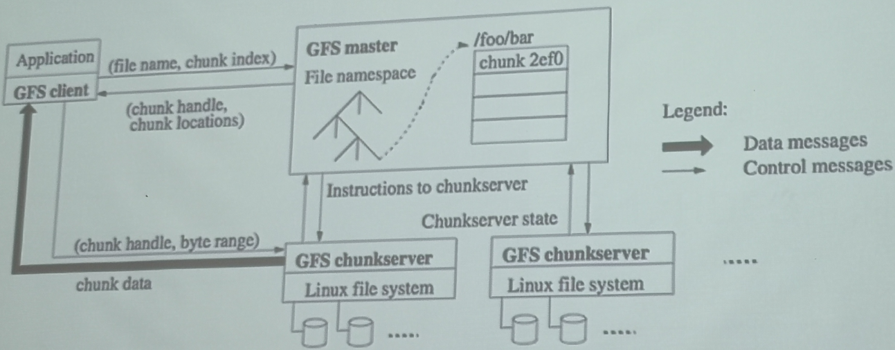 | 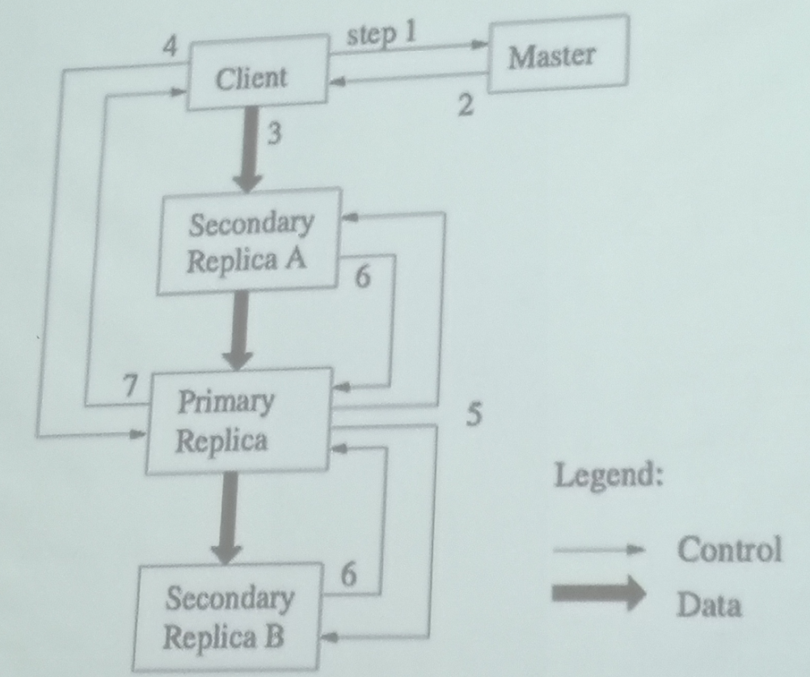 |
- GFS:谷歌第一架马车
- name node在Hadoop 1.0中进程崩溃会导致系统整个崩溃
2.1. HDFS上的数据存储操作
- 适合大量的大文件
- 平均单个文件超过500M
- 一次写入，多次读出
- 单个文件的内容不能被修改，除非在文件
- 末尾添加新的数据
- 可以做什么?
- 创建新文件
- 向文件末尾增加内容
- 删除一个文件
- 修改文件名
- 修改文件属性(如:拥有者)
2.2. HDFS架构
- 使用了主从数据库
- Client是用户访问数据的接口
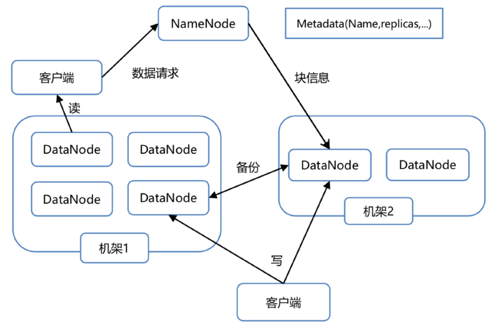
2.3. HDFS的冗余存储

2.4. HDFS基本操作
hadoop fs -ls /user/:显示hdfs指定路径下的文件和文件夹hadoop fs -putmy_file /data/:将本地文件上传到hdfshadoop fs -get /tmp/data/my_file:将hdfs_上的文件下载到本地hadoop fs -cat /tmp/data/my_file:查着dfs中的文本文件内容hadoop fs -text /tmp/data/my_sequence_file:查着dfs中的sequence文件内容hadoop fs -rm /tmp/data/my_file:将hdfs,上的文件删除
3. MapReduce
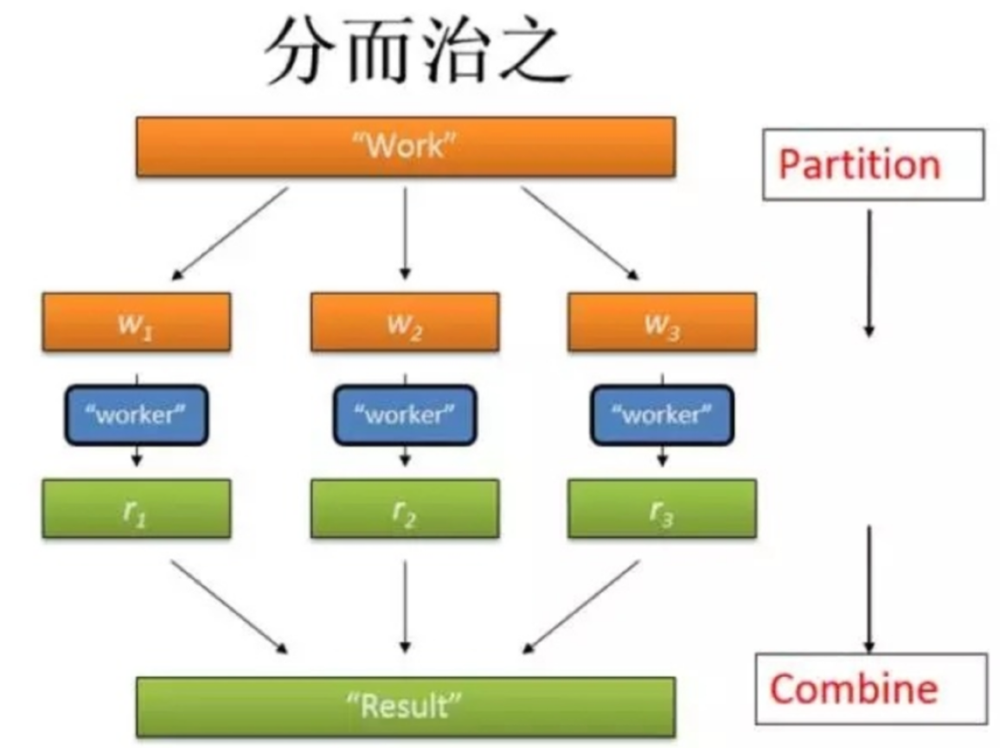
操作
- Map
- Reduce
4. 数据流
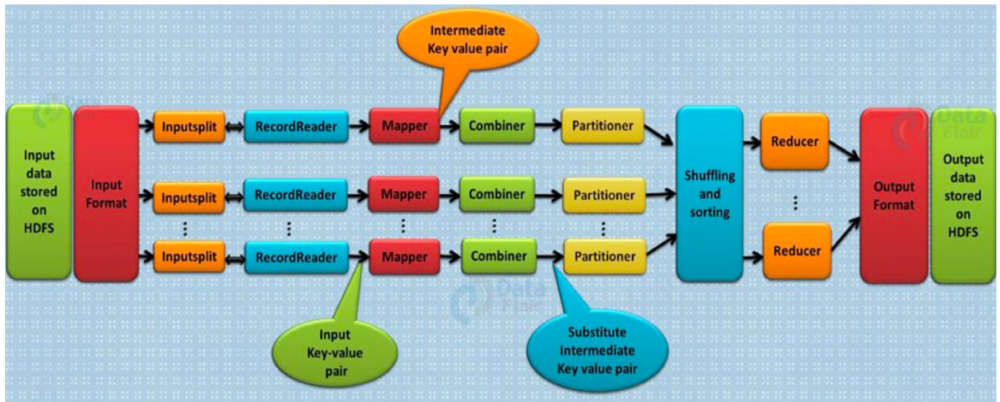
按照管道的方式对数据流进程处理，将Mapper和Reducer放到单一节点上提高计算效率